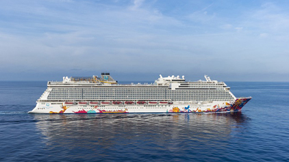

关于星梦邮轮

云顶香港 倾力打造
云顶香港凭借25年的丰富亚洲市场经验，孕育出旗下全新
品牌—星梦邮轮。星梦邮轮致力成为区内业界典范，满足
自信、独立思考、追求高尚优质享受之亚洲旅客的需求。
品牌完美融合中西元素，为旅客带来独特的海上旅游享受
。屡获赞誉的「云顶梦号及世界梦号」于邮轮业界权威指
南《2019伯利兹邮轮年鉴》星级十优评选中获评「世界
十大最佳大型邮轮」，并获2018年《TTG》中国旅游大
奖之「最佳新邮轮」殊荣。除此之外，星梦邮轮亦获得
许多亚洲区荣誉，例如《悦游》金榜之「大中型邮轮T
op 5」及2018年《旅讯》亚洲版「读者之选」之「最
佳新邮轮」。

星梦邮轮
云顶香港凭借超过23年的丰富亚洲市场经验，孕育出旗下全新品牌—星梦邮轮。 星梦邮轮致力成为区内业界典范，满足自信、独立思考、追求高尚优质享受之亚洲旅客的需求。品牌完美融合中西元素，为旅客带来独特的海上旅游享受。 星梦邮轮专为中国及亚洲市场而设，旗下第一艘邮轮「云顶梦号」于2016年11月首航，而其姊妹邮轮「世界梦号」亦已于2017年11月加入船队，为旅客提供区内最高水准的服务及最宽敞舒适的海上居停。星梦邮轮船队将于2019年迎来万众期待的「探索梦号」，而首艘「环球级」邮轮的建造工程现正于德国进行，预计新成员将于2021年加入船队。 星梦邮轮船队的客房空间宽敞且选择众多，超过七成附有专属露台，其中更有超过100间可连通客房，切合家庭及团体旅客的需要。星梦邮轮以豪华的船中船概念，匠心打造配备欧式管家服务的「皇宫」贵宾专属区域，让旅客享受绝无仅有的奢华舒适。入住「皇宫」贵宾专属区域之旅客更可倍享各项专属尊尚礼遇。